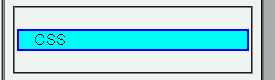
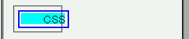

ブロック要素に指定した背景やボーダーが、要素の内容物に対応した部分にしか表示されない。
<p style="background:aqua; border:2px solid blue;">CSS</p>
CSS
WinIE6.0での表示
NN4.78での表示
マージンを指定することでこの不具合を回避できます。ボーダーのプロパティ、マージンのプロパティを両方指定することでこのバグを回避できます。ただし、colorプロパティが無効になるバグが発生するため、文字色がデフォルトのままになりますフォント関連のプロパティや前景色の指定が無視され、これらは全てデフォルト値になります（NNバグ012参照）。なお、ボーダーの内部が背景色で完全に塗りつぶされない現象は回避できません。
マージンやボーダーが必要ない場合でも必ずプロパティを指定してください。マージンを必要としない場合は幅を0に、ボーダーを必要としない場合はborder-styleでnone値を指定してください。
<p style="margin-left:0; background:aqua; border:2px solid blue; color:green;">CSS</p>
CSS
NN4.78では不具合の発生が確認されました。